期待の新人監督
2011年から毎年恒例の自主映画公募企画「期待の新人監督」。すでに何人もの自主映画監督がプロとしてデビューし、実績を積んできた。今年は応募作品89本の中から過去最多の22作品が選抜され上映される。各作品の監督も当日は出席し舞台あいさつを行う。この22作品の中から審査員が選ぶグランプリである期待の新人監督賞の一本と、観客が選ぶ観客賞の一本を当日決定する。勝ち残るのはどの監督なのか？！
短編A
髑髏と爪
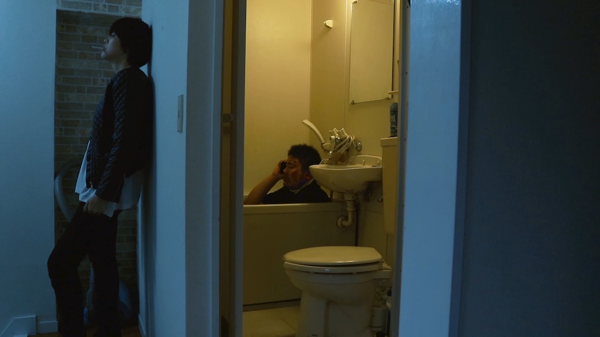2016年/35分
監督・脚本・編集：杉本秀平
出演：永靖たくと、ユミコテラダンス、稲葉年哉、田中祐理子
殺し屋と遭遇した主人公は非日常の世界に巻き込まれる。スリラー映画。
杉本秀平
1989年神奈川県生まれ。東京在住。働きながらときどき自主映画を作っています。ちなみに現在も新しいのを製作中です。
改めて見返してみると、自分の好きな作品の影響が随所に見られるので、映画好きの方は楽しめると思います。つまらなかったらスミマセン。。
また、無意識のうちに影響を受けている部分も沢山あると思いますので鑑賞後「あのシーンは、あの映画のココに似ているね」的なお話とか出来ると嬉しいです。
養貝揚場の死斗
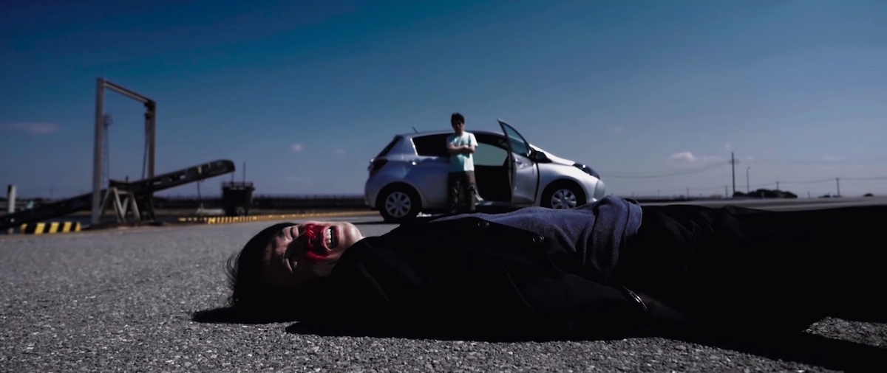2016年/35分
監督・脚本、撮影、編集、録音：藤井翔太
出演：荒井紀久、斎藤皓允、谷英明、中野健治、ゆーまろ
最後に残るのは誰か？ 和製メキシカン・スタンドオフ犯罪映画。
藤井翔太
1990年三重県生まれ。インデペンデント映像制作者。YouTubeで3年間映像を学ぶ。現在はゼロ予算長編犯罪映画を製作中。
薬密売組織の内部分裂と警察の犬かもしれないパンツ男の回想からなるストーリー。下っ端はパンツ男を殺して逃げるか、殺さずに助けるリスクをとるか、近づくサイレン音の中選択する。かっこいい犯罪映画を作りたい。作れない理由だらけでした。それをできる限り無視して出来たのがこの映画です。
瓜二つ
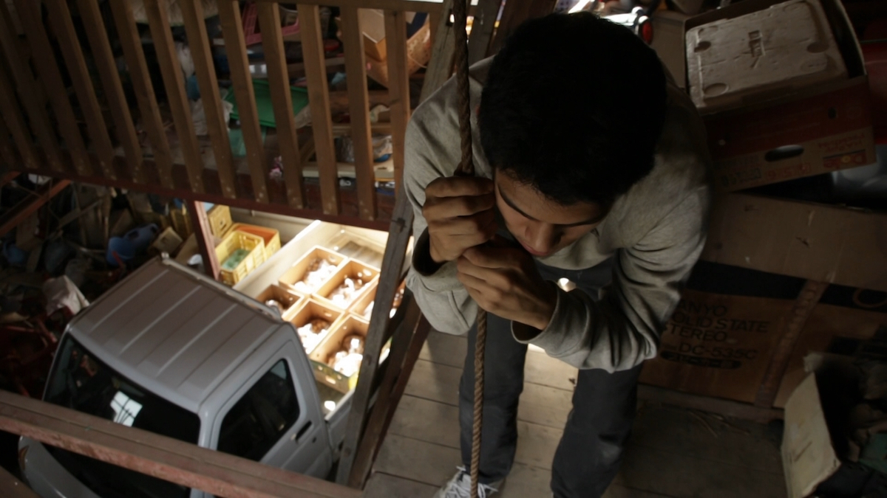2015年/14分
監督・脚本・編集：山川智輝
録音：阿部琢也、岩田隼之介
出演：浜口春樹、山川俊三
農家の納屋に隠れる外国人。シチュエーション・サスペンス映画。
山川智輝
1994年岐阜県生まれ。2016年に『瓜二つ』が19th CHOFU SHORT FILM COMPETITIONにてグランプリを受賞。
１人でも多くの方に観ていただけたら嬉しいです。よろしくお願いいたします。
短編B
WALK IN THE ROOM
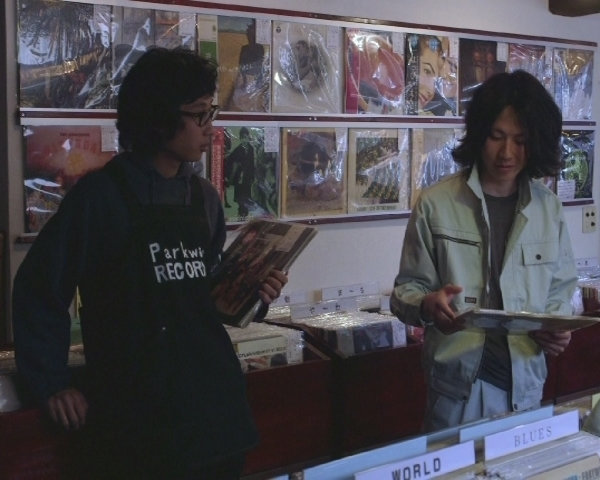2015年/14分
監督・脚本・編集・撮影：下社敦郎
撮影：高嶋正人
出演：高崎風太、鈴木英生、枝元深佳
ある事件で言語障害になった工員が主人公の青春音楽映画。
下社敦郎
1987年三重県生まれ。本作で第17回TAMA NEW WAVE入選。いまおかしんじ監督『ろんぐ・ぐっどばい』ほか、いくつかの映画で音楽も手がけている。
見る方によって受けとる温度差の激しい映画だと思いますが、結果的に私の二十代の履歴書と呼べるような作品になったので思い入れはとても強いです。主人公の立夫を軸に三部作を計画しています。
変わらないで。百日草
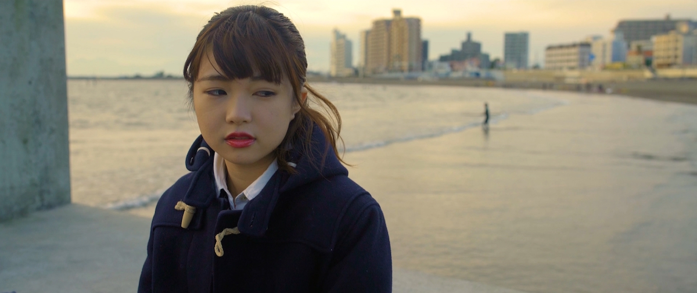2017年/49分
監督・脚本・編集：川北ゆめき
音楽：大槻美奈
撮影：近藤実佐輝
制作：中央大学映画研究会
気付けば時間が経ってしまっていたあの頃を思い出す。青春群像劇。
川北ゆめき
1994年神奈川県生まれ。現在、中央大学映画研究会所属 4年。
サークルで映画を撮り始め、今回5作品目。
ようやく映画祭のノミネートまでたどり着けました…。
気が付いたらもう大人と呼ばれる年齢になっていました。なんか悲しい。周りの友達もどんどん大人になって…。ふと自分なりに、改めて友人関係について考えてみました。そんな僕なりの考えを、頑張って切り取った様な映画です。何が正しいとかじゃないれけど。
短編C
ウエポンズ
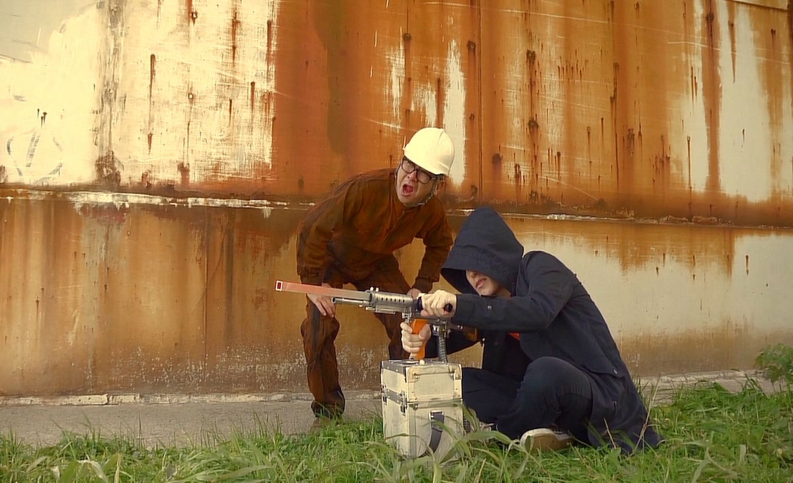2016年/31分
監督・脚本・撮影・編集：市原啓
出演：和田和子、中根裕治、加藤康裕
照明・録音：小柳津昌也
近未来都市NAGOYAを舞台にしたローカル感あふれるSF映画。
市原啓
1973年愛知県生まれ。2006年ムービーコンペ｢ＧＵＮＣＯＭ11｣において押井守 審査員個人賞を受賞。ＴＶ番組などの撮影・編集に従事する傍ら、自主映画の制作にも携わる。
名古屋を舞台に制作された、本格的近未来サスペンス・アクション！
４年間かけて究極のＳＦを追求して制作した映画だったが、４年のうちになぜか時代が追い付いてきた?!
未来か、現実か、ひりひりするストーリーとアクションを楽しんでください！
アマノジャク・思春期
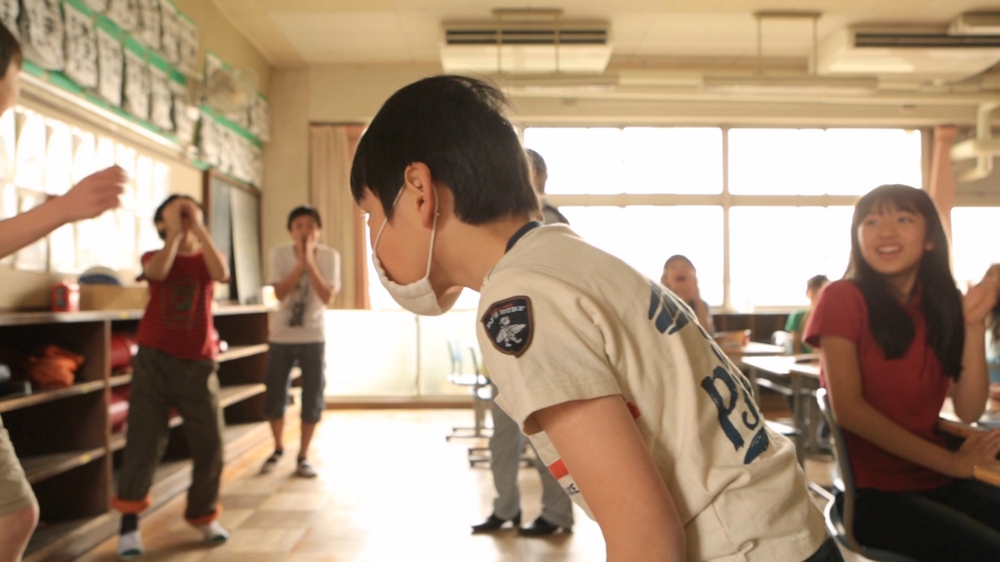2016年/32分
監督・脚本・編集：岡倉光輝
出演：山本楽、千野羽舞、古山憲太郎、三坂知絵子、河野知美
重度の受け口に苦しむ小学生の主人公。児童残酷物語。
岡倉光輝
1987年東京生まれ。映画を撮るため生を受けた何か。特異な容貌に苦しんだ自身の少年期を初監督の本作で映画化。旧題『Goblin』で、ところざわ学生映画祭入選。
監督自身の「受け口」治療を題材にした映画の、第一作目です。特異な容貌に苦しむ自身の子供時代の生き辛さの再現に、監督のみならず、キャスト・スタッフ文字通り四苦八苦しました。
磯部少年の日常について、ご感想お待ちしています。
FILAMENT
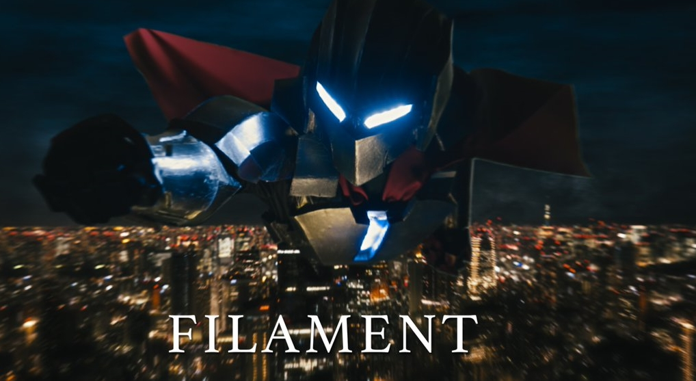2017年/30分
監督・脚本・編集・VFX：田中大貴
撮影：鈴木隆造
録音：荒川翔太郎
出演：藤井草馬、芳村宗治郎
ヒーローとなった若者の選んだ道とは？ ハードなヒーロー映画。
田中大貴
1994年東京生まれ。物心ついた時からヒーローに憧れ、６歳の時に初めてスターウォーズを見たことがきっかけで映画の世界に魅了される。今年3月に日本大学芸術学部映画学科監督コースを卒業。
私が子供だった頃、将来の夢はスーパーヒーローになることでした。そしてその夢は、ヒーロー映画を作りたいという衝動に変わり、この映画が生まれました。この映画はヒーロー映画であり、夢を追い続ける人達の映画です。夢を追う者の、現実との戦い、挫折、そしてその生き様を、是非見届けてください。
短編D
もりのくまさん
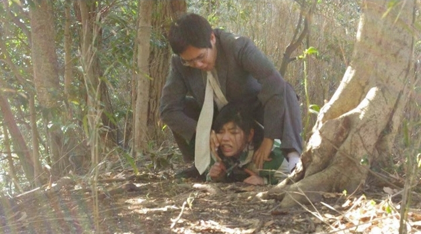2017年/18分
監督・出演：伊藤舜
音楽：北島睦月
出演：森幸子
森で女性ハイカーが変質者に襲われる。ガールズ・リベンジ作品。
伊藤舜
1993年神奈川県生まれ。中学から映画を撮り続け今に至る。前作『シジフォスの地獄』でPFF審査員特別賞を受賞。いつか映画で認められたいと思いつつも、現在映画とは無縁の仕事に就いている。私は早く巨匠になりたい。
男は本質的に汚らわしいが、特に忌まわしいのはその精神だ。支配的で傲慢で、そのくせ甘ったれて、おぞましい幼児性を「男らしさ」と昼間世間に振りまいて開き直っている畜生、つまりAnimalである。この映画は男を写す鏡だ。見て笑え。
阿呆の舞
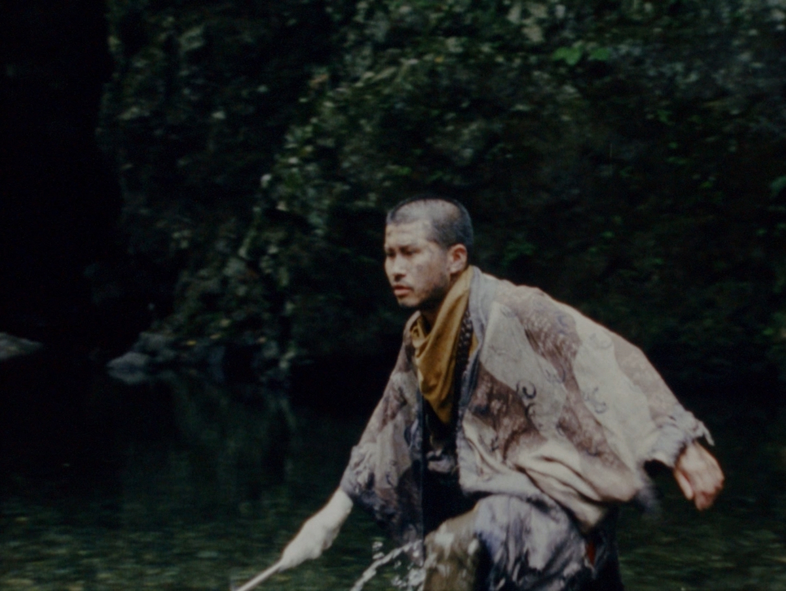2016年/10分
監督・脚本・撮影・編集：坂田貴大
撮影：清水大河
録音：島田実里
出演：渡部剛己、本田七海
16ミリカメラで撮られた監視・管理社会を描くディストピアSF。
坂田貴大
1995年埼玉県生まれ。2014年に日本大学芸術学部映画学科監督コース入学。現在在学中。
2017年、卒業制作作品として『クマ・エロヒーム』を16ミリで制作中。2018年完成予定。
昨年1月に日本で施行された「マイナンバー制度」。監視・管理社会に包まれる日本の存在と私自身の居場所についてを結びつけ、シニカルな目線で過去ではなく〈現在〉を表現した作品です。
10分という短い時間ですが、皆さんの脳裏に焼きつくことができれば良いと思います。「黙れ、黙れ、ニッポン！」
腰抜け
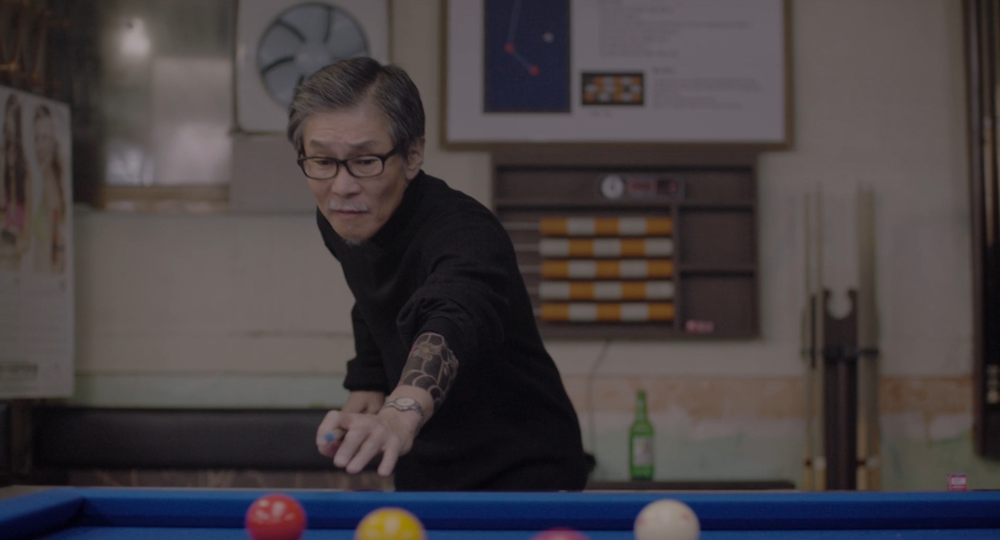2017年/23分
監督・脚本：寺田悠真
撮影：キム・ジンヒョン
出演：イ・サンイ、康すおん
ある目的を持って韓国を彷徨う日本人アウトローのドラマ。
寺田悠真
1994年石川県生まれ。日本映画大学在学(4年）
映画に登場するブソクと黒澤は、世間から見ると社会から振り落とされた人達です。そんな二人が韓国で出会い、娘を探す道中で、各々抱える孤独や苦しみを共有し影響し合っていく再生の物語です。醜く辛い世界でそれでも強く生きようと足掻くブソクと黒澤を通して、心に響くものがあればいいと思います。
覚めない夢
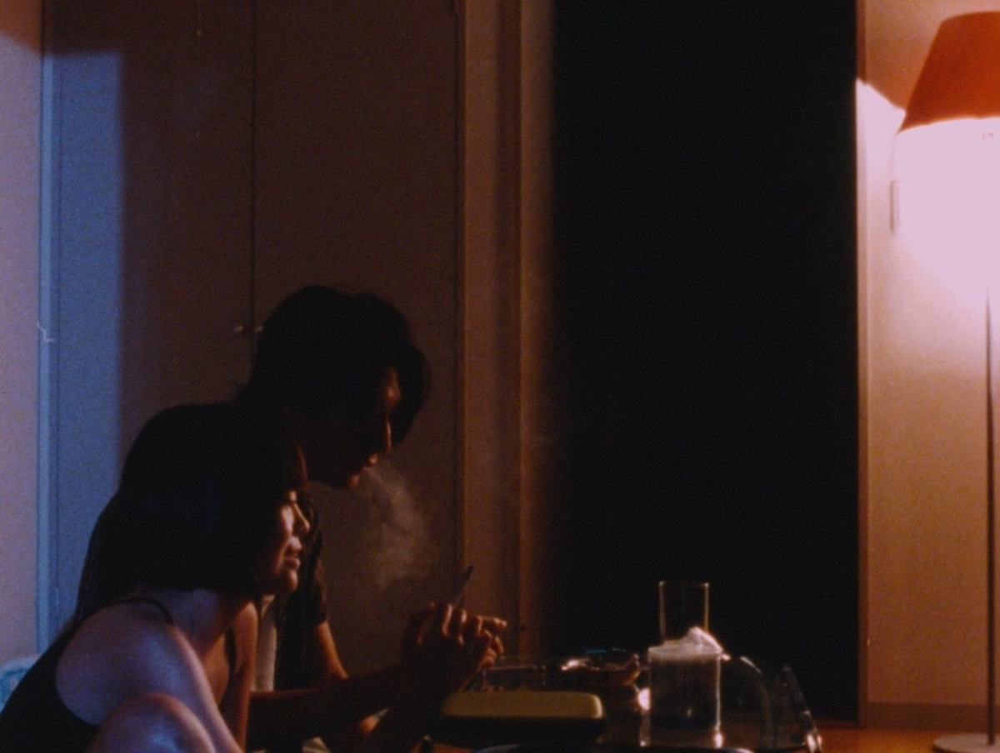2017年/10分
監督・脚本・編集：伊藤希紗
撮影：初野百花
録音：島田実里
出演：加藤千尚、みおり舞
日活ロマンポルノに愛を込めて。16ミリカメラで撮られたポルノ作品。
伊藤希紗
1995年大阪生まれ。日本大学芸術学部映画学科監督コース在学中。５歳の頃、『モダン・タイムス』を見て映画に目覚める。夢はプログラムピクチャーを撮ること。
上京したての春、今は無き新橋ロマン劇場で神代辰巳監督の『赫い髪の女』を見たことがこの作品を制作するきっかけです。童貞だけど日活ロマンポルノに愛を込めて撮りました。16ミリフィルムの質感と加藤千尚、みおり舞の芝居をお楽しみください。いつの時代も人は孤独だと思います。
はりこみ
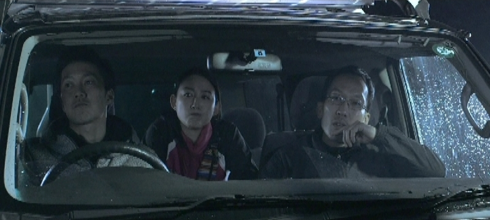2017年/28分
監督・脚本：板垣雄亮
出演：池田香織、鳥谷宏之、鶴町憲、板垣雄亮
張り込み中の警察車両でぼやく刑事たち。ユーモアあふれる会話劇。
板垣雄亮
1973年東京生まれ。俳優として演劇、TVドラマ、映画、ナレーションなどで幅広く活動する一方、自身の脚本・演出で劇団「殿様ランチ」の代表も務める。
今回、初監督した作品がこうして上映の機会を与えていただいて大変恐縮しています。
映画の現場はとても新鮮で刺激的でした。演劇の舞台では困難な表現が映像では簡単にできたりしたので嬉しかったです。もとは舞台用に書いた作品ですので、映像化したことでこっちの方が面白いとなると少し複雑です。
おっさんのケーフェイ
2017年/71分
監督：谷口恒平
出演：川瀬陽太、松田優佑、赤城
脚本：橋本夏
撮影：金碩柱
小学生と自称プロレスラーのおっさんの交流を描くコメディ。
谷口恒平
1988年京都生まれ。『あの娘はサブカルチャーが好き』でMOOSIC LAB 2013に参加。おもな監督作に『本当にあった 投稿 闇映像 16』など。
仕事で心霊ビデオを撮りながら「嘘と本当」についてぐるぐる考えているうちに、プロレスで世間に中指を立てる子供たちの物語が生まれました。大阪の団体、道頓堀プロレスの全面協力で出来上がった映画です。大人から子供まで楽しめる熱いエンターテイメントを目指しました。
白波
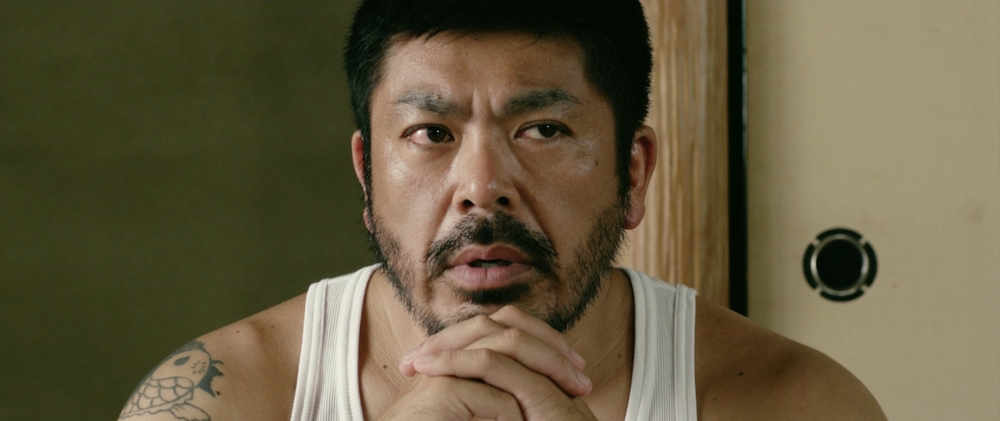2017年/70分
監督・脚本・VFX：長尾淳史
出演：川崎拓斗、関根愛、大宮将司、難波江基己、BOSS戸田
琵琶湖に浮かぶ島を舞台にした出口なしの群像ドラマ。
長尾淳史
1994年滋賀県生まれ。立命館大学映像学部映像学科在学。大学入学を機に映像制作を始め、監督作品の多くが国内外コンペにて入賞。本作『白波』が初長編作品。
本作品は１年前日本唯一の淡水に浮かぶ有人島にて撮影を敢行致しました。架空の島を舞台に少年の純粋な思いと島内の閉塞感を重厚な映像で表現しています。宜しくお願します。
ハングマンズノット
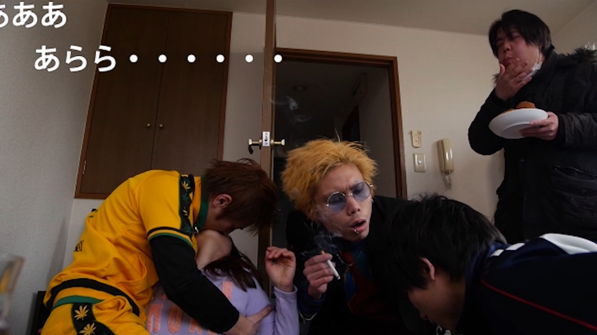2017年/87分
監督・脚本：阪元裕吾
共同脚本：吉井健吾
出演：吉井健吾、安田ユウ、松本卓也
ぼっちの狂人VS凶悪不良グループの血みどろバイオレンス作品。
阪元裕吾
1996年京都生まれ。京都の某私立芸術大学で映画を学ぶ学生。『べー。』という作品を撮り、学生残酷映画祭2016でグランプリと観客賞を獲る。
コミュ障でぼっちな狂人、柴田さん。
ある事件をきっかけにその狂気を爆発させ、やがて凶悪ヤンキー集団との抗争をおっ始める……。
老若男女、誰でも楽しめるバイオレンスエンターテイメントを目指しました。映像の中で爆発するキャラクター達の躍動が、観客の皆様の心を掴むことを祈っています。
よろずや探偵談
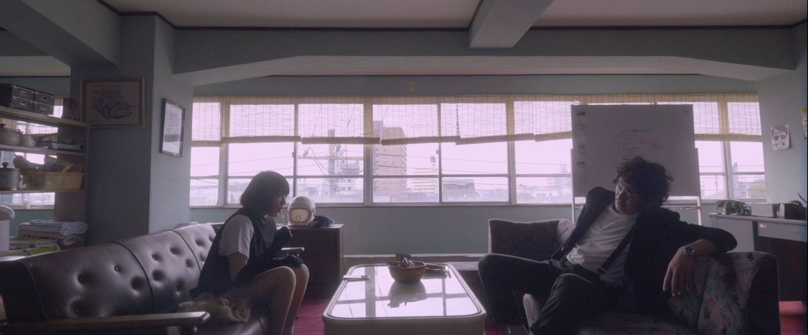2017年/91分
監督：沢村東次
脚本：鳥海雄介
音楽：北村太郎
出演：三浦知之、くり子、七菜乃、マメ山田
探偵社を中心に巻き起こるドタバタ騒動。アクション・コメディ作品。
沢村東次
1971年千葉県生まれ。千葉市にて自動車の整備工場をやりながら、2014年より突如、自主制作にて映画作りに没入するようになる。
さあさあ、お立ち会い
名もなき虚構による厭世狩り
このから騒ぎを ご覧あれ！
鋼鉄はいかに輝くか
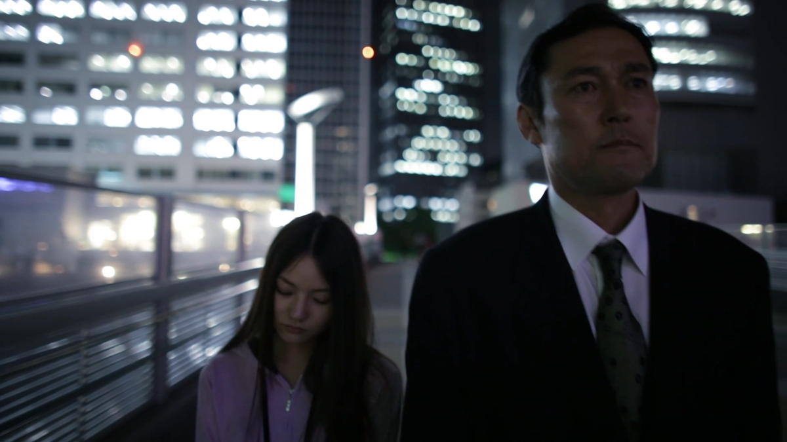2015年/100分
監督：稲垣誠
出演：軍司眞人、藤井章満、横堀秀樹、信太昌之、外波山文明
魑魅魍魎が跋扈する闇の世界を描いた東京フィルム・ノワール。
稲垣誠
1965年愛知県生まれ。十代より自主製作で映画製作開始。助監督の仕事などを経て16ミリで製作した中編を夕張映画祭などで上映。初の長編『鋼鉄はいかに輝くか』完成。現在新作準備中。
コンプライアンスなどといって表現に自由度のない昨今、テレビ放送とか絶対出来ないようなものを作ってやろう思って始めました。１０人に嫌われても一人の人が１０倍好きになってくれるような作品を目指しています。退屈な長回しとかないです。全編を夜の闇に覆われたサイコ・ノワールです。
歯まん
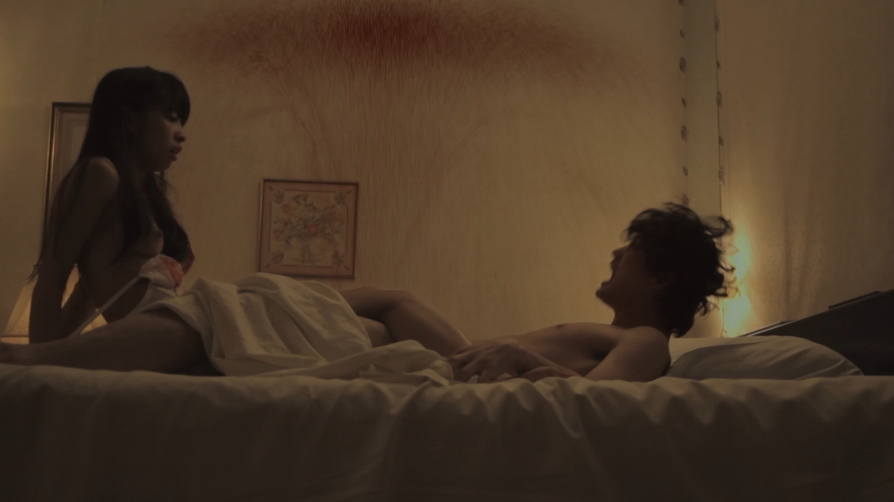2015年/95分
監督・脚本：岡部哲也
出演：馬場野々香、小島祐輔、水井真希、中村無何有、宇野祥平
女性器に歯が生えている女子高生。青春エロティック・ホラー。
岡部哲也
1982年東京生まれ。フリーの助監督として山下敦弘、石井裕也などの監督作品に従事。『歯まん』で初監督。ほか監督作品に幽霊の恋を描いた短編『また会う日まで』がある。
遥香は変わった体質が原因で、初めてのSEXで彼氏を殺してしまう。不条理な世の中で、コンプレックスを抱えて生きる人に観てもらいたいダークファンタジー。ゆうばり映画祭2015にて北海道知事賞を受賞。モントリオール世界映画祭、シッチェス映画祭など各地の映画祭でも上映された怪作。
自由を手にするその日まで
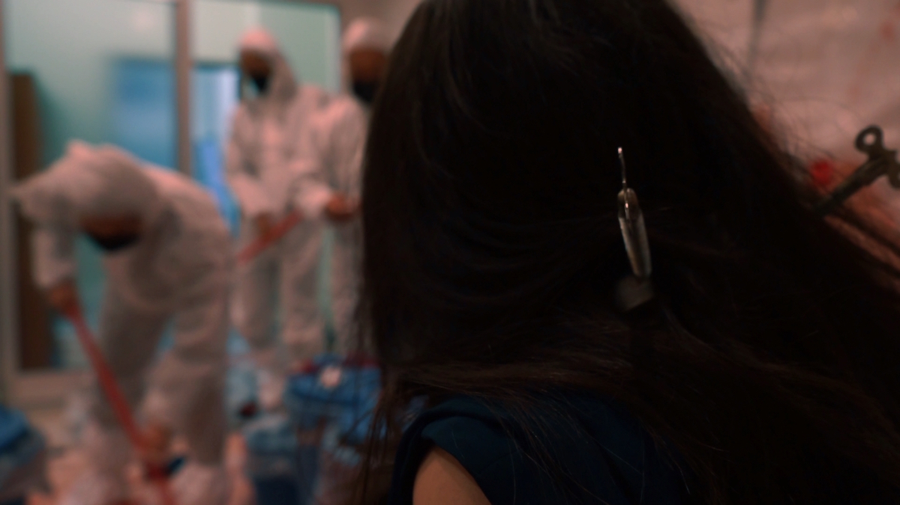2017年/112分
監督・脚本・編集・音楽：天野友二朗
出演：みやび、宮内杏子
撮影助手：田保恭介、井坂優介、吉川諒
陰惨な職場いじめ。強烈な残酷描写で描くガールズ・リベンジ映画。
天野友二朗
1990年東京生まれ。大学・大学院と医学系研究を学ぶ。単身上京後、初監督作である本作の脚本を書きオーケストラ所属経験を活かしてBGM作曲も手掛ける。次回作脚本も完成。
喜怒哀楽という感情があり、人が正の感情を題材にするなら、自分は負の感情を題材にした予想の裏をかく作品を作りたい―
そうしたコンセプトから、本作が始まりました。
本作の前半部の職場シーンは、ほぼ事実を題材にしています。それに加え、インディーズならではの遊び心も沢山練り込みました。
バーミー
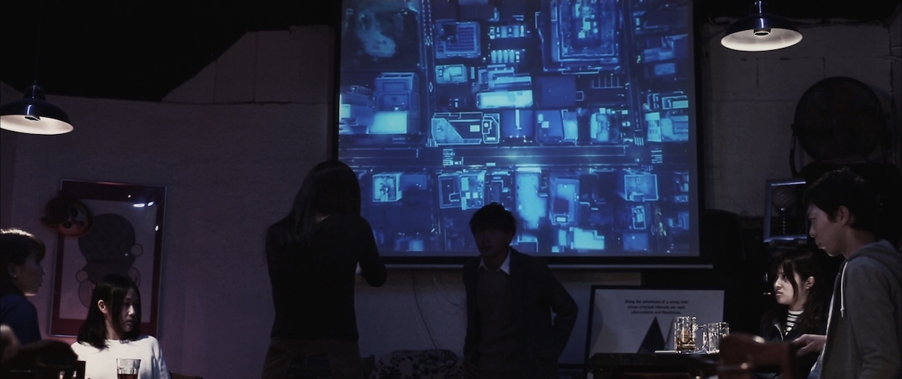2016年/100分
監督：田中隼
撮影：荒井英明
音楽：寺田英一
出演：行永浩信、中里広海、柘植美咲
日常の世界に徐々に不穏な気配が漂っていく。心霊ホラー映画。
田中隼
1978年香川県生まれ。東京都在住。
滋賀大学経済学部を卒業後、映画美学校ドキュメンタリー科にて佐藤真・筒井武文らに師事。
奇跡は田代史子と佐伯亮太を急速に惹き合わせ、結婚へと向かわせた。しかし佐伯は他人に言えない能力に悩まされていた。それは、幽霊が見えてしまうということ。幽霊が見えない史子との生活は徐々にすれ違い、ある時、決定的に破綻する。しかし、一度発動した奇跡は二人が離れることを許さなかった。
同じ月は見えない
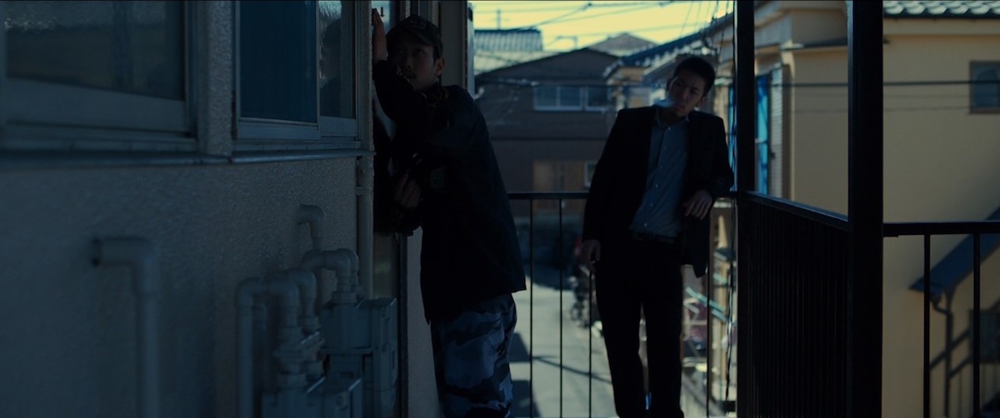2017年/110分
監督・脚本・撮影・編集：杉本大地
出演：先崎帆南、勝倉悠太、土橋昂之助、石河麻瑚、竹田蓮瑠人、池田剛紀、下瀬太陽
センパイから紹介される危険なシゴト…。ブルーカラー青春映画。
杉本大地
1993年東京生まれ。大学で自主制作の映画を撮り始め、初監督作『あるみち』でPFFグランプリ受賞、その後ベルリン国際映画祭等ノミネートを果たす。
今作が2作目。
大学の卒業制作として作りました。
地元や大学の友人に協力をしてもらい、役者もほとんどが素人の方に演じてもらいました。毎日撮影を行い、再撮や追撮をし、気がつけば二年以上の月日が流れていました。うんざりしながらも最後の最後までついてきてくれた友人に本当に感謝の気持ちでいっぱいです。
審査員
平山夢明
1961年神奈川県川崎生まれ。「SINKER 沈むもの」でデビュー。「独白するユニバーサル横メルカトル」（2007年度版「このミステリーがすごい！」国内部門一位）、「DINER」（第13回大藪春彦賞）。他に「ミサイルマン」「他人事」「デブを捨てに」「ヤギより上、猿より下」など多数。原作映画『無垢の祈り』（16）が異例のロングランヒット中！「DINER」がヤングジャンプで今夏、連載決定！
田井 肇
1956年岐阜生まれ、別府育ち。1976年に始まった湯布院映画祭の創設メンバーとして実行委員を13年務めた後、1989年より、当時閉館予定だった大分市の劇場「シネマ５」の経営を引き継ぎ、それまで大分市では見られなかったアート系映画を公開する劇場として経営する。2011年より、やはり閉館した劇場を引き受け姉妹館「シネマ５bis」として経営。現在、大分県興行組合理事長、一般社団法人コミュニティシネマセンター代表理事。
小野寺生哉
1976年石川県金沢市生まれ。2006年に「鈴木則文特集／エンタテインメントの極意」を企画し、2007年からカナザワ映画祭を主宰。2017年より一般社団法人映画の会代表理事就任。